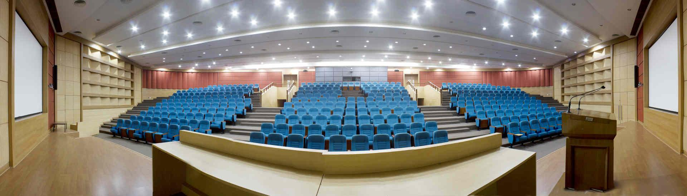

Introduction

The Department of Computer Science and
Engineering at Indian Institute of Technology, Bombay is the largest and
one of the most renowned Computer Science departments of the country.
The department has highly sought after research, postgraduate and
undergraduate programs, leading to Ph.D., M.Tech. and B.Tech. degrees.
The department has internationally recognized research groups in most of
the areas in Computer Science. The faculty here regularly publish
papers in leading international conferences and journals, and serve on
the editorial boards and program committees of leading international
journals and conferences. The department’s teaching and research
activities are handled by over forty faculty members and about a hundred
Ph.D. students with an annual intake of approximately 120 M.Tech.
students and 120 B.Tech. students.
Message from the Head
of the Department
Greetings from the Computer Science
and Engineering Department, IIT Bombay. I congratulate you for you
success in GATE 2017. In CSE@IITB, you will find yourself in the midst
of the best minds in the country, both among students as well as
faculty. We would be happy to admit students like you in this
department. Your stay here will transform your life like never before.
So, do take a bit of time to ponder over the possibilities.
Your academic life here will consist of three strands:
Courses, an M.Tech. Project, and your work as a Teaching Assistant (or
Research Assistant). In the first strand, you are primarily a receiver
whereas in the second and the third strand, you will be a contributor to
this department. These three strands give you a well-rounded exposure
to teaching, learning, and research. What makes this experience
wholesome is the fact that almost of our faculty live on the campus,
making it possible for them to give a larger amount of time and
attention than is possible otherwise.
In your first year, you will be learning a lot through the
lecture-based courses, laboratory courses, and programming exercises
that you will be doing through the year. We have a wide variety of
courses that cover everything from the basics to the most recent
research results. Make full use of these courses, and learn everything
you can.
In your second year, you will move to a different role,
where you will be doing your M.Tech. Project. We expect each of you to
do top notch work towards your project, where you will not just be
learning, but you will be contributing to the world of knowledge through
your R&D activities. Our department has achieved a significant
international standing in research in significant part due to our
students. We trust you will continue the long tradition of excellence
in R&D which our past and current students have established.
A third aspect of your life in the department will be your
TA/RA work. From your very first week you will be contributing, either
as TAs or RAs. This is very important work, where you will be
affecting the learning of other students, or contributing to our
computing infrastructure, or aiding research projects. Many of our
students find a sense of responsibility in this activity apart from an
opportunity to learn quite a few basics much better.
And of course you should make time to enjoy the wonderful
facilities that IIT Bombay provides in terms of sports and cultural
activities. We do want you all to be balanced individuals. Be sure that
the balance does not swing too far to one side. Your days are going to
be packed. Work hard, have fun, enjoy the experience, and contribute to
our community in every way you can.
As an evidence of an all-round experiences of our students, I invite you to visit:
The page of our annual event RISC (Research and
Innovation Symposium in Computing) that showcases our research by
inviting a large participation from the industry is
https://www.cse.iitb.ac.in/~risc/.
Student magazine of the department can be found at
BitStream Page, and student magazine of the institute can be found at
Insight Page .
IITB Campus
IIT Bombay is a small township in
itself. Rich in natural flora and fauna, the campus' green cover has
been maintained and even increased over the years. An island of green in
the otherwise concrete jungle that is Mumbai, the campus at Powai
nestles among hills and is flanked by the Powai and Vihar lakes. It is
special both in terms of its physical beauty and location — a place
where you can be away from the busy world, yet still be a part of it.
The campus is heaven for bird watchers, with hundreds of species of
birds spotted across the campus, and particularly in the Powai lake.
The new highrise hostels offer breathtaking views of the lakes and the
adjoining hills and forests, as well as beautiful cityscapes.
The IITB campus has top-notch sports facilities including
floodlit playing fields, an olympic sized swimming pool, air conditioned
badminton, and squash courts, air conditioned rooms for indoor games,
and indoor volleyball and basketball courts and cricket practise areas
that can be used even during the monsoons.
Right outside IITB is the happening township of Hiranandani
Gardens, home to leading finance companies, as well as many startups,
and to a great selection of restaurants. One of India’s largest malls,
with a huge choice of shops, movies and food, is just 20 minutes away
in Ghatkopar. There are fantastic trekking spots within a couple of
hours travel from IITB, and are at their most beautiful state during the
monsoon.
Department Points of
Pride
Our department is widely acclaimed as the best Computer
Science and Engineering department in India. Some of our points of
prides are listed below. You can find more details at Points of Pride page and Annual reports page.
- The achievements of our faculty have been recognized in a number of ways:
-
We have in the midst of us Padmashri Prof. D.B. Phatak. This is one of the topmost civilian awards.
- Our department has 3 ACM Fellows. ACM Fellow
constitute ACM's most prestigious member grade by recognizing the top 1%
of ACM members for their outstanding accomplishments in computing and
information technology and/or outstanding service to ACM and the larger
computing community.
- A number of our faculty have been elected fellows
of the four premier national academies of science and engineering in
India, namely the INAE, IASc, INSA and NASI.
-
Our faculty have won the prestigious Shanti Swaroop Bhatnagar award, and the Swarnajayanti Fellowships.
- Our faculty are among the most highly cited authors
in computer science, with 4 faculty having a h-index (a measure of
citation depth and breadth) of 40 or greater as per Google Scholar.
- Dr. Pushpak Bhattacharyya (now on deputation as
Director, IIT Patna) was elected as president of the ACL (Association of Computational Linguistics), the premier international organization for computational linguistics, for the year 2016.
- Two teams from IIT Bombay qualified to be at the ACM ICPC
World Finals 2016 based on winning performances in the Regional
Contest. The team members are
Encore: Aditya Akash, Sai Krishna, Shyam J V S.
NTM: Nikhil Vyas, Sai Sandeep, Venkat Rao.
Earlier, Team Code Templars from IIT Bombay (Navin Chandak, Nisheeth
Lahoti and Vipul Harsh), qualified for the world finals of the ACM ICPC
2015
- Our faculty are internationally recognized for their
research activities and have been Program Committee Chairs & Editors
of the foremost conferences and Journals. Papers authored by our
faculty and students have won best paper awards at numerous
international conferences.
- Our PhD students have won numerous recognitions,
including the ACM India Best Doctoral Dissertation Award (Rijurekha Sen,
2015), SIGMOD Jim Gray Doctoral Dissertation Award (Karthik
Ramachandra, 2014), ACM India Distinguished Dissertation Award (Ruta
Mehta, 2012), IBM Outstanding Research Scholar Award, and PhD
fellowships from TCS, MSR etc. . Graduating PhD students have been
placed in leading research labs, such as Google and IBM Research Labs.
- CSE department won the PG sports General Championship
for the year 201516 and the sports secretary for 2015-16, Arpan Bhagat
was awarded with the prestigious Athletics person of the year award and
the Sportsperson of the year award!
PG students of our department showed their talent in
several extracurricular activities. Students took strong participation
in the PG Cult and PG Sports and won several accolades and awards.
KRESIT Premier League (KPL), organized by PG students of CSE, is one of
the most exciting cricket leagues of the IIT Bombay campus.
Frequently Asked
Questions
-
To learn more about admissions to the CSE MTech programme at IITB, visit M.Tech Admissions page.
- Have questions about the 3 year MTech (RA) programme? visit this page.
Message From the Student
Representatives
Greetings!
First of all, hearty congratulations for your outstanding
performance in GATE 2017! We look at you as our prospective students and
welcome you to the CSE Department, IIT Bombay.
A few of the prime reasons that have made IIT Bombay the
most sought after institute for postgraduate studies is its excellent
academic and research environment and rich student life.
The best and unique part about life at IITB is that it
gives you tremendous opportunities to develop yourself across all
various dimensions like academics, research, arts, culture, leadership
qualities etc. There are world class facilities available in research in
all areas. A lot of technical events, workshops, talks, conferences are
organized in the department to keep the students aware about the
current work going on in research. TechFest, the annual cultural
festival of IIT Bombay, sees around 1,50,000 visitors from all over
India. Feel its grandeur here.
The department gives you opportunities to not only focus on
your academics and research but also to get involved in extracurricular
activities that you are genuinely interested in. Mood Indigo,
the annual cultural festival of IIT Bombay, is the largest and the
grandest in Asia. Remember, to be called a true IITian, and to be one,
overall development is must. Just keep your priorities aligned and you
are good to go.
Life at IIT Bombay is full of immense learning and amazing
memories to cherish for lifetime. Experience it to know it. We look
forward to see you joining the next batch of M.Tech, CSE at IIT, Bombay.
Thanks !
Feel free to get in touch with us.
Faculty Members and
Their Research Areas
Below is the list of our faculty members and their research areas. Please visit faculty page for more information regarding office address, contact number and email ID of faculty members.
| Name |
Research Areas |
| Prof. Bharat Adsul |
Formal methods in Concurrency, Logics and Games, Geometric Complexity Theory |
| Prof. Varsha Apte |
Performance Evaluation of Computer Systems and Networks |
| Prof. Kavi Arya |
Functional Programming Applications (Domain Specific
Languages), Embedded Systems/ Parallel Programming Languages, Distance Learning |
| Prof. Suyash Awate |
Image Processing, Medical Image Computing, Computer
Vision, Statistical Inference, Machine Learning |
| Prof. Umesh Bellur |
Autonomic Computing of Distributed Applications,
Adaptive &QoS aware Event Broker Networks, Functional and Architectural adaption in pervasive computing, Middleware design for sensor networks, Object & Aspect oriented computing, Service oriented Computing |
| Prof. Pushpak Bhattacharyya |
Natural Language Processing, Machine Learning, Artificial Intelligence. |
| Prof. Supratim Biswas |
Programming Languages, Compilers, Compiling for parallel and multi-core processors. |
| Prof. Soumen Chakrabarti |
Hypertext databases, Data mining |
| Prof. Supratik Chakraborty |
Formal techniques for analysis, verification, validation of digital systems, Asynchronous timing analysis |
| Prof. Sharat Chandran |
Graphics, Computer Vision, Computational Geometry, Parallel Algorithms, Visualization, Medical Imaging
|
| Prof. Parag Chaudhuri |
Animation, Computer Graphics, Virtual and Augmented
Reality, Geometric Computer Vision
|
| Prof. Siddhartha Chaudhuri |
Computational design tools, high-level shape understanding, shape recognition & reconstruction, large-scale rendering |
| Prof. Kameswari Chebrolu |
Architecture and protocol design in wired, wireless and sensor networks; development of appropriate technology
|
| Prof. Om P. Damani |
Program Derivation, Large Scale Systems, Technology for
Social Development |
| Prof. Dhananjay Madhav
Dhamdhere |
Distributed Algorithms, Programming Languages, Operating
Systems, Optimizing Compilers |
| Prof. Ajit A Diwan |
Algorithms, Theoretical Computer Science |
| Prof. Ashwin Gumaste |
Optical Networks, Access Networks, Metro and Enterprise
Networks, Network Algorithmics |
| Prof. Sridhar Iyer |
Mobile Computing, Distributed Systems, Educational
Software |
| Prof. J. Saketha Nath |
Machine Learning, Data Mining, Convex Optimization |
| Prof. Rushikesh K. Joshi |
Object Oriented Systems, Distributed Systems, Software
Architectures |
| Prof. Preethi Jyothi |
Automatic speech recognition and machine learning as applied to speech |
| Prof. Shivaram Kalyanakrishnan |
Sequential decision making, multiagent learning, multiarmed bandits, and humanoid robotics. Application domains include robot soccer, computer games, online advertising |
| Prof. Uday Khedker |
Programming Languages, Optimising Compilers, Data Flow Analysis (eg. interprocedural analysis, heap analysis, pointer analysis etc.), Parallelization and Vecorization, and Machine Descriptions for GCC. |
| Prof. Purushottam Kulkarni |
Wireless and sensor networks, Virtualization, Distributed systems and Data dissemination |
| Prof. Nutan Limaye |
Algorithms and Complexity Theory |
| Prof. Bernard Menezes |
Information Appliances, Electronic Commerce, Java Security, Parallel Computing, Time Series Forecasting |
| Prof. Deepak B. Phatak |
Database Management Systems, Software Engineering, System Performance Evaluation, Distributed Client Server Information Systems |
| Prof. Manoj Prabhakaran |
Cryptography and other topics in Theoretical Computer Science; Applied Cryptography |
| Prof. Ajit Rajwade |
Image Processing, Computer Vision, Image
Restoration, Image Compression, Probability Density Estimation, Bayesian
Methods, Compressive Sensing and Matrix Completion. |
| Prof. Krithi Ramamritham |
Databases, realtime systems, and distributed
applications, Dynamic Data in sensor networks, embedded systems,
mobile environments and the web. |
| Prof. Bhaskaran Raman |
Computer networks, Wireless systems, Communication system design for developing regions |
| Prof. Ganesh Ramakrishnan |
Statistical Relational Learning, Graphical Models, Machine
Learning (Support Vector Machines, Information Extraction) |
| Prof. Abhiram Ranade |
Algorithms and Combinatorial Optimization |
| Prof. S Krishna |
Formal Methods, Bioinspired Computing |
| Prof. S. Akshay |
Formal methods |
| Prof. Amitabha Sanyal |
Functional Programming, Compilers and Programming
Languages, Program Analysis |
| Prof. Sunita Sarawagi |
Web information extraction, Data integration, Graphical models and Structured learning |
| Prof. Nandlal L. Sarda |
Databases, Information Systems, Software Engineering |
| Prof. R.K Shyamasundar |
Formal Methods & Software Engineering, Distributed Computing, Network & Information Security & Survivable Systems |
| Prof. Sivakumar G. |
Automated Reasoning, Logic Programming, Rewrite Systems, Networks, Distributed Systems |
| Prof. Milind Sohoni |
Combinatorial Optimization, Mathematical Programming, Algorithms |
| Prof. S. Sudarshan |
Query processing and optimization, Keyword querying on structured and semistructured data, Testing database applications |
| Prof. Sundar
Vishwanathan |
Algorithms, Combinatorics, Complexity Theory |
| Prof. Mythili Vutukuru |
Computer Networking, Wireless Communication, Distributed
Systems, Network Security
|
| Prof. Arjun Jain (Adjunct Faculty)
|
Deep Learning, Computer Vision and Computer Graphics |
Research Groups
Our department houses several
research groups spanning the areas of Networks, Databases, Compilers,
Embedded Systems, Computer Graphics, Language Technologies, Machine
Learning, Speech Recognition and Geospatial Systems.
SYNERG (Systems and Networks Research Group)
SYNERG is a research group with a focus on networking and
distributed systems. Research by this group covers several fields of
systems like Wireless Networks, Network Performance Analysis,
Communication Systems for the developing world, Distributed Systems and
Virtualization. The professors associated with this research group are
Prof. Bhaskaran Raman, Prof. Kameswari Chebrolu, Prof. Purushottam
Kulkarni, Prof. Mythili Vutukuru, Prof. Umesh Bellur and Prof. Varsha
Apte. For more information about this research group visit SYNERG.
CFDVS (Centre for Formal Design and Verification of Software)
CFDVS has been set up with the broad aim of carrying out R&D
activities in the area of quality software development with special
focus on formal verification techniques for safetycritical applications.
Formal verification methods are founded on rigorous mathematical
techniques and hence enable development of quality software. The
laboratories are equipped with a number of personal computers, highend
servers and workstations. The current software resources include a
number of public domain tools for formal specification and verification,
advanced static analysis, dynamic analysis and testing tools
(testbeds), modeling languages and related environments for realtime
software supporting simulations and verification, hazard analysis
tools and CASE tools and general programming environments. For more
information about CFDVS research group visit CFDVS.
InfoLab
IITB InfoLab group covers a wide range of research areas such as Databases, Data Mining, Information Retrieval, and Machine Learning. The professors affiliated to this group are Prof. S. Sudarshan, Prof. Sunita Sarawagi, Prof. Soumen Chakrabarti, Prof. Krithi Ramamritham, Prof.Pathak and Prof. Ganesh Ramakrishnan. For more information about this research group visit InfoLab.
ERTS (Embedded RealTime Systems Laboratory)
The primary areas of research for this lab have been Embedded Systems Modeling and Design, Real Time Operating Systems Design and Robotics. The lab has executed numerous R&D projects for industry as well as government agencies such as BARC and agencies such as TIFAC. These projects consist of Postgraduate Students or Research Assistants guided by faculty members and personnel from leading research organizations. Interaction and collaboration with crossdisciplinary people through the ERTS lab provides a sound foundation for research. The professors affiliated to this group are Prof. Kavi Arya and Prof. Krithi Ramamritham. For more information about this research group visit ERTS.
GRC (GCC Resource Center)
This Center has been established with the twin goals of (a) spreading the knowhow of GCC by building suitable abstractions of GCC internals, and (b) improving GCC by introducing new technologies. It was initiated with a seed grant from IIT Bombay and an IBM Faculty Award for Prof. Uday Khedker and was later supported by a generous grant from Department of Information Technology (DIT), Ministry of Communication and Information Technology (MCIT), Govt. of India. The professors affiliated to this center are Prof. Uday Khedker, Prof. Amitabha Sanyal and Prof. Supratim Biswas. For more information about this research group visit GRC.
CFILT
CFILT lab concentrates on Natural Language Processing and Machine Learning with focus on Indian Language Processing. Over the years the lab has made impactful contributions to language
technology and resources like Wordnets, Machine Translation tools and
resources, Sentiment and Emotion Analysis systems and Cross Lingual
Information Retrieval. More than 250 graduate students have worked in the
lab in the context of their thesis work and other R & D activities.
Faculty associated this lab are Prof. Pushpak Bhattacharyya, Prof. Ganesh
Ramakrishnan, Prof. Saketha Nath, Prof. Preethi Jyothi, Prof. Malhar
Kulkarni (HSS), Prof. Vaijayanthi Sarma (HSS) and Prof. Anirudha Joshi
(IDC). CFILT has seen its
students join top CS-IT industries like IBM, MSR, HP Labs, Accenture,
Google and Facebook. The lab has executed sponsored and consultancy
projects from Ministry of IT, Ministry of Human Resource Development,
Accenture, Elseviere, NEC, MSR, Yahoo, IBM and so on.Research done in CFILT
has been reported in top conferences and journals like ACL, COLING, EMNLP,
NAACL, CoNLL, IJCNLP, SIGIR, TALLIP, SIAM Journal etc.". To know more about this research group visit CFILT
VIGIL (Vision, Graphics and Imaging Laboratory)
VIGIL research group’s research covers areas related to Computer graphics, Geometry processing, Image and signal processing,Computer vision and medical image computing. Rendering (photorealistic, non-photorealistic, real-time, immersive); animation (character, physics-based); sketch-based systems; augmented and virtual reality; camera and imaging systems. Image and geometry reconstruction; restoration; compressed sensing; compression; pattern recognition; localization; segmentation; tracking; registration; quantization; shape analysis; group analysis; retrieval; affective computing. Professors associated with this research group are Prof. Sharat Chandran, Prof. Ajit Rajwade, Prof. Parag Chaudhuri, Prof. Siddhartha Chaudhuri, Prof. Suyash P. Awate and Prof. Arjun Jain. For more information about this research group visit VIGIL.
GNL (Gigabit Networking Laboratory)
IITB GNL group covers a wide range of advanced data, voice and computer networking research areas such as Telecom Networks, Carrier Ethernet, All Optical Networking, Data Center Design, and Router Technology. The lab has state of the art networking, optical and test equipments. The professor affiliated to this group is Prof. Ashwin Gumaste. The lab has produced many industry grade routers (ECR100, ECR1010), patents and multitude of research papers. For more information about this research group visit GNL
GISE (Geospatial Information Science & Engineering)
The Advanced Research Lab for GISE is a five year project under the
Department of Science and Technology, Government of India, which aims to
establish R&D thrust on Computer Science aspects of Geographic
Information Science and Engineering with focus on SpatioTemporal Data
Modeling and Analysis, SOA based Architectures for Geographic
Information, GeoVisualization and Analytics, Software Engineering for
Geospatial Systems. For more information about this research group visit
GISE.
Security Areas covered include Cryptography, secure
operating systems, network security, and wireless network security.
Associated faculty include Profs. Bernard Menezes, Manoj Prabhakaran, R.
K. Shyamasundar.
Theory
IIT Bombay has an active research programme in Theoretical Computer Science, spanning several areas including Algorithms, Combinatorial Optimization, Combinatorics, Complexity Theory, Cryptography and Graph Theory. Faculties in this group are Abhiram Ranade, Ajit Diwan, Bharat Adsul, Manoj Prabhakaran, Milind Sohoni, Nutan Limaye, Srikanth Srinivasan, Sundar Vishwanathan. Related faculties: S Akshay, Supratik Chakraborty, Krishna S, G Sivakumar. Vist our page here.
Other Research Areas Artificial Intelligence and Robotics (Prof. Shivaram Kalyanakrishnan), Speech Recognition (Prof. Preethi Jyothi)
Courses
Following are the Comprehensive list of courses offered at CSE, IIT Bombay.
| Course Code |
Course Name |
| CS 101 |
Computer Programming and Utilization |
| CS 152 |
Abstractions and Paradigms for Programming |
| CS 154 |
Abstractions and Paradigms in Programming Lab. |
| CS 202 |
Programming |
| CS 203 |
Discrete Structures |
| CS 204 |
Switching Theory and Logic Design |
| CS 205 |
Programming |
| CS 206 |
Formal Methods in CS |
| CS 207 |
Discrete Structures |
| CS 207 (M) |
Discrete Structures |
| CS 208 |
Automata Theory and Logic |
| CS 210 |
Logic Design |
| CS 211 |
Software Lab two |
| CS 212 |
Electronics Design I |
| CS 213 |
Data Structures and Algorithms |
| CS 213(M) |
Data Structures and Algorithms |
| CS 214 |
Data Structures and Algorithms |
| CS 215 |
Data Interpretation and Analysis |
| CS 216 |
Numerical Computation |
| CS 218 |
Design and Analysis of Algorithms |
| CS 218(M) |
Design and Analysis of Algorithms |
| CS 224 |
Computer Networks |
| CS 224 (M) |
Computer Networks |
| CS 226 |
Digital Logic Design |
| CS 228 |
Logic For CS |
| CS 228(M) |
Logic For CS |
| CS 251 |
Software Systems (8 credits) |
| CS 252 |
Computer Networks Lab. |
| CS 254 |
Digital Logic Design Lab |
| CS 288 |
Logic Design Lab |
| CS 290 |
Logic Design Lab |
| CS 292 |
Electronics Design Lab I |
| CS 293 |
Data Structures Lab |
| CS 294 |
Programming Lab I |
| CS 295 |
Computer Lab |
| CS 301 |
Design and Analysis of Algorithms |
| CS 302 |
Implementation of Programming Languages |
| CS 303 |
Digital Signal Processing |
| CS 304 |
Probability and Random Signal Theory |
| CS 305 |
Computer Architecture |
| CS 307 |
Digital Signal Processing |
| CS 308 |
Embedded Systems Lab |
| CS 310 |
Automata Theory |
| CS 311 |
Electronics Design II |
| CS 312 |
Introduction to Theory of Computation |
| CS 313 |
Business Information Systems |
| CS 314 |
Business Information Systems |
| CS 315 |
Numerical Computation |
| CS 316 |
Implementation of Programming Languages Lab |
| CS 317 |
Database and Information Systems |
| CS 317 (M) |
Databases and Information Systems |
| CS 319 |
Theory of Computation |
| CS 321 |
Programming Laboratory II |
| CS 322 |
Database Management System |
| CS 323 |
Computer Organization and Design |
| CS 324 |
Language Processors |
| CS 326 |
Operations Research |
| CS 327 |
Introduction to Systems Programming |
| CS 328 |
Programming Languages |
| CS 329 |
Principles of Programming Languages |
| CS 331 |
Theory of Computation |
| CS 332 |
Microprocessor Based Systems |
| CS 333 |
Operating Systems Lab |
| CS 334 |
Introduction to Programming Languages |
| CS 336 |
Computer Aided Geometric Design |
| CS 340 |
Microprosessor Lab |
| CS 341 |
Computer Architecture Lab. |
| CS 344 |
Artificial Intelligence |
| CS 346 |
Software Engineering |
| CS 347 |
Operating Systems |
| CS 347(M) |
Operating Systems |
| CS 348(M) |
Computer Networks |
| CS 350 |
Linear Optimisation |
| CS 352 |
Machine Learning |
| CS 386 |
Artificial Intelligence Lab |
| CS 387 |
Database and Information Systems Lab |
| CS 388 |
Practical Training |
| CS 389 |
Programming Languages Lab. |
| CS 390 |
Microprocessors and Interfaces Lab |
| CS 391 |
Electronics Design Lab II |
| CS 392 |
Database Management Systems Lab |
| CS 393 |
Business Information Systems Lab |
| CS 394 |
Language Processors Lab |
| CS 396 |
Seminar |
| CS 397 |
Works Visits |
| CS 398 |
Business Information Systems Lab |
| CS 399 |
Digital Signal Processing Lab |
| CS 401 |
Kernel programming |
| CS 404 |
Quantum Computing |
| CS 406 |
Cryptography and Network Security - I |
| CS 407 |
Digital Signal Processing |
| CS 408 |
Graph Theory |
| CS 408 M |
Graph Theory |
| CS 411 |
D.S.P. Laboratory |
| CS 412 |
Introduction to Program Analysis |
| CS 413 |
Compilers |
| CS 414 |
Introduction to Wireless Networks |
| CS 415 |
Numerical Computation |
| CS 416 |
Foundations of Network Security and Cryptography |
| CS 416(M) |
Foundations of Network Security and Cryptography |
| CS 418 |
Applications of Digital Signal Processing |
| CS 419 (M) |
Introduction to Machine Learning |
| CS 420 |
Program Derivation |
| CS 421 |
Parallel Programming Paradigms |
| CS 422 |
System Specification & Implementation |
| CS 424 |
Convex Optimization |
| CS 431 |
Intro.Computer Systems |
| CS 432 |
Introduction to Computer System |
| CS 435 |
Linear Optimization |
| CS 440 |
O.S. Lab |
| CS 441 |
Database Management Systems |
| CS 442 |
Operating System Principles |
| CS 443 |
Artificial Intelligence |
| CS 444 |
Database Management Systems |
| CS 445 |
Management Information Systems |
| CS 446 |
Computational Learning Theory |
| CS 447 |
Operating System |
| CS 449 |
Topics in Artificial Intelligence Programming |
| CS 450 |
Compiler Construction |
| CS 451 |
Distributed Systems |
| CS 453 |
Selected Case Studies of Computer Systems: Adv... |
| CS 455 |
Introduction to Computer Networks |
| CS 456 |
Computer Networks |
| CS 459 |
Data Mining |
| CS 460 |
Natural Language Processing |
| CS 461 |
Digital Computer Design Fundamentals & Micropr... |
| CS 462 |
Analytical Models of Computing Systems |
| CS 463 |
Design and Analysis of Algorithms |
| CS 466 |
Functional and Logic Programming |
| CS 467 |
Functional and Logic Programming |
| CS 468 |
Computational Models in Pattern Recognition & ... |
| CS 470 |
Modelling and Simulation |
| CS 472 |
Introduction to VLSI Design Automation |
| CS 474 |
Cognitive Psychology |
| CS 475 |
Computer Graphics |
| CS 476 |
Reliable Computing Basic Concepts |
| CS 482 |
Selected Case Studies of Computer Systems |
| CS 483 |
Modelling and Simulation |
| CS 484 |
Cognitive Psychology |
| CS 486 |
Reliable Computing Basic Concepts |
| CS 487 |
Mini Project I |
| CS 488 |
Modelling and Simulation |
| CS 489 |
Mini Project II |
| CS 491 |
Mini Project 1 |
| CS 493 |
Artificial Intelligence Lab |
| CS 494 |
B.Tech. Project (20 credits includes CS 493 also) |
| CS 495 |
Operating Systems Lab |
| CS 497 |
B.Tech. Project (grade points will be included in |
| CS 498 |
B.Tech.Project Stage II |
| CS 499 |
Project Stage I |
| CS 591 |
Project Stage II |
| CS 592 |
Project Stage III |
| CS 601 |
Algorithms and Complexity |
| CS 602 |
Applied Algorithms |
| CS 603 |
Geometric Algorithms |
| CS 604 |
Combinatorics |
| CS 605 |
Probability and Statistics For Computer Science |
| CS 606 |
Foundations of Parallel Computation |
| CS 608 |
Approximation Algorithms |
| CS 611 |
Formal Language and Models for Natural Computing |
| CS 612 |
Object Oriented Techniques |
| CS 613 |
Design & Implementation of Functional Programming |
| CS 614 |
Advanced Compilers |
| CS 615 |
Formal Specification and Verification of Prog... |
| CS 616 |
Parallelizing Compilers |
| CS 617 |
Object Oriented Systems |
| CS 618 |
Program Analysis |
| CS 620 |
New Trends in Information Technology |
| CS 621 |
Artificial Intelligence |
| CS 623 |
Introduction to Computing with Neural Nets |
| CS 625 |
Machine Learning : Theory and Methods |
| CS 626 |
Speech, Natural Language Processing and the We... |
| CS 627 |
Graphical Models and Structured Learning |
| CS 628 |
Introduction to Asynchronous Systems |
| CS 630 |
Approximation Algorithms |
| CS 631 |
Implementation Techniques for Relational Datab... |
| CS 632 |
Advanced Database Management Systems |
| CS 633 |
Database Modelling and Design |
| CS 634 |
Information System |
| CS 635 |
Information Retrieval & Mining for Hypertext &... |
| CS 636 |
Data Mining |
| CS 641 |
Computer Networks |
| CS 642 |
Communication Networking |
| CS 643 |
Distributed Operating Systems |
| CS 644 |
Design and Analysis of Computer Networks |
| CS 645 |
Advanced Data Networks |
| CS 646 |
Optical and Access networks |
| CS 648 |
Selected Topics in Network Algorithms |
| CS 649 |
Cryptography and Network Security - I |
| CS 650 |
Distributed Algorithms |
| CS 652 |
Distributed Operating Systems |
| CS 653 |
Mobile Computing |
| CS 654 |
Current Topics in VLSI and System Design |
| CS 656 |
Electronic Commerce |
| CS 660 |
Mutimedia Systems |
| CS 662 |
Computer Vision |
| CS 663 |
Digital Image Processing |
| CS 664 |
Pattern Recognition |
| CS 669 |
Information Technology Service Management |
| CS 670 |
Information Technology Project Management |
| CS 671 |
ICT for Socio-Economic Development |
| CS 675 |
Computer Graphics |
| CS 677 |
Introduction to Computing with Neural Nets. |
| CS 679 |
Geometric algorithms |
| CS 680 |
Quality of Service in Networks |
| CS 681 |
Performance Analysis of Computer Systems and N... |
| CS 682 |
Software Engineering (Only For CSE M. Tech) |
| CS 683 |
Advanced Computer Architecture |
| CS 684 |
Embedded Systems |
| CS 685 |
Distributed Operating Systems |
| CS 686 |
Object Oriented Systems |
| CS 687 |
Fundamentals of Digital Image Processing |
| CS 688 |
Self-tuning systems |
| CS 689 |
Machines Learning: Theory and Methods |
| CS 690 |
New Trends in IT. |
| CS 691 |
R & D Project I |
| CS 692 |
R & D Project II |
| CS 693 |
R & D Project III |
| CS 694 |
Seminar (for M. Tech.) |
| CS 695 |
Topics in Virtualization and Cloud Computing |
| CS 696 |
I Stage Project |
| CS 697 |
II Stage Project |
| CS 699 |
Software Lab. |
| CS 700 |
Advanced Lab |
| CS 701 |
Software - Practice and Experience Laboratory |
| CS 702 |
Introduction to Asynchronous Systems |
| CS 703 |
Performance Analysis of Computer Systems and N... |
| CS 704 |
Information Retrieval and Mining for Hypertext... |
| CS 705 |
Statistical Foundations of Machine Learning |
| CS 706 |
Networks Lab |
| CS 707 |
Distributed Event Based Systems |
| CS 708 |
Human Computer Interaction |
| CS 709 |
Convex Optimization |
| CS 710 |
Topics in Computational Linear Algebra and Gro... |
| CS 711 |
Topics in Computational Ring Theory and Algebras |
| CS 712 |
Topics in Natural Language Processing |
| CS 713 |
Selected Topics in Automata and Logics |
| CS 715 |
Design and Implementation of Gnu Compiler Gene... |
| CS 716 |
Introduction to Communication Networks |
| CS 717 |
Statistical Relational Learning |
| CS 718 |
Software Architecture |
| CS 719 |
Topics in Mathematical Foundations of Formal V... |
| CS 720 |
Spatial Databases (only 15 students) |
| CS 721 |
Introduction to Computational Complexity |
| CS 723 |
Introduction to Probability and Linear Algebra |
| CS 724 |
Network Security Cryptography - 2 |
| CS 725 |
Foundations of machine learning |
| CS 726 |
Advanced machine learning |
| CS 728 |
Organization of Web information |
| CS 729 |
Topics in machine learning |
| CS 730 |
natural language processing |
| CS 732 |
Fundamental Algorithms in Computational Biology |
| CS 733 |
Advanced Distributed Computing – Engineering a... |
| CS 734 |
Hardware Software CoDesign of Embedded Systems |
| CS 735 |
Formal models for Concurrent and Asynchronous ... |
| CS 736 |
Medical Image Computing |
| CS 738 |
Concepts, Algorithms and Tools for Model-Checking |
| CS 739 |
Modeling and Analysis of Timed and Hybrid Systems |
| CS 740 |
Mathematics for Visual Computing |
| CS 741 |
Advanced Network Security and Cryptography |
| CS 742 |
Foundations of Network Security and Cryptography |
| CS 743 |
Wireless Networks |
| CS 744 |
Design and Engineering of Computing Systems |
| CS 745 |
Principles of Data and System Security |
| CS 746 |
Kernel Programming |
| CS 747 |
Foundations of Intelligent and Learning Agents |
| CS 748 |
Advances in Intelligent and Learning Agents |
| CS 749 |
Digital Geometry Processing |
| CS 750 |
Linear Optimization |
| CS 751 |
Principles of Concurrent and Parallel Program... |
| CS 752 |
System Dynamics: Modeling & Simulation for Dev... |
| CS 753 |
Automatic Speech Recognintion |
| CS 754 |
Advanced image processing |
| CS 755 |
Competitive programming |
| CS 756 |
Software Defined Networking and Network Functi... |
| CS 763 |
Computer Vision |
| CS 775 |
Advanced Computer Graphics |
| CS 776 |
Principles of Mathematical Modeling |
| CS 792 |
Communication Skills |
Placement
|
Academic Year
|
Number of students placed
|
Number of Companies
|
Average Gross Salary in INR *
|
|
2016-2017
|
98
|
36
|
14,75,000
|
|
2015-2016
|
102
|
40
|
14,30,000
|
|
2014-2015
|
97
|
39
|
14,35,000
|
* Rounded off to nearest multiple of 5000.
The above statistics are from CSE department. Every
students who registered for placement got placed. The salary shown is
gross salary. CTC is mostly much higher than gross. For example, in case
of Microsoft, the gross salary was 12.00 lakhs per annum, but the CTC was
around 21 lakhs per annum. The companies visited include top MNCs from
various sectors like Engineering and Technology, R&D, IT/Software,
Analytics, Services, Finance, FMCG, Consulting. See 2016-2017 Placement Brochure and 2015-2016 Placement Report to know more. Information of previous placement seasons can be found at the Placements page.
About This Handbook
Contributors: Srijay Deshpande, Niharika Kurade, Rajeev Verma, Prateeksha Kesari, Bhushan kalal, Neha Garg, Raj MN, Ganesh Bhambarkar, Sameeran Roy, Arpan Bhagat, Abhishek Bagade, Pramay Karule, Anand Namdev, Ashish Mithole.